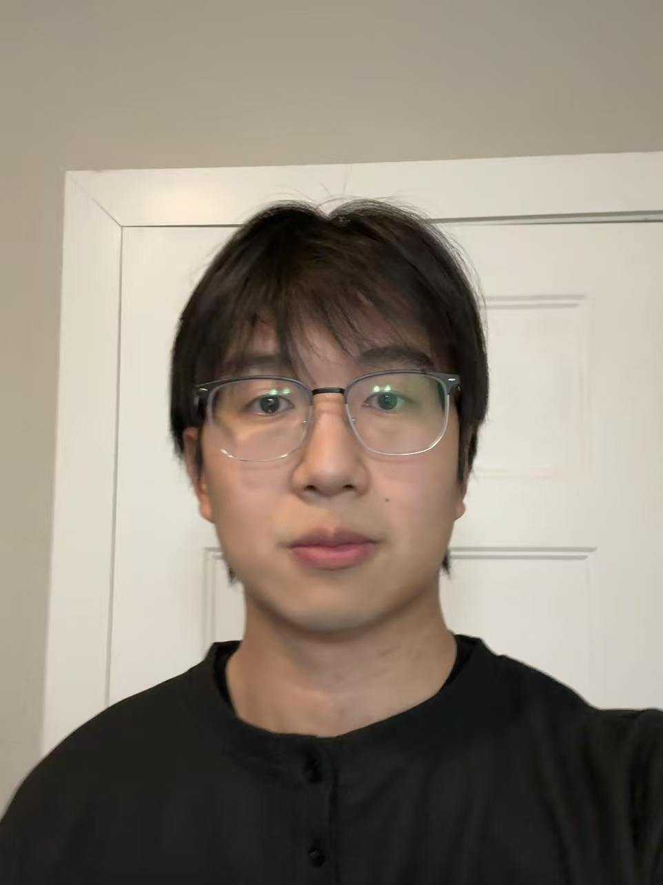
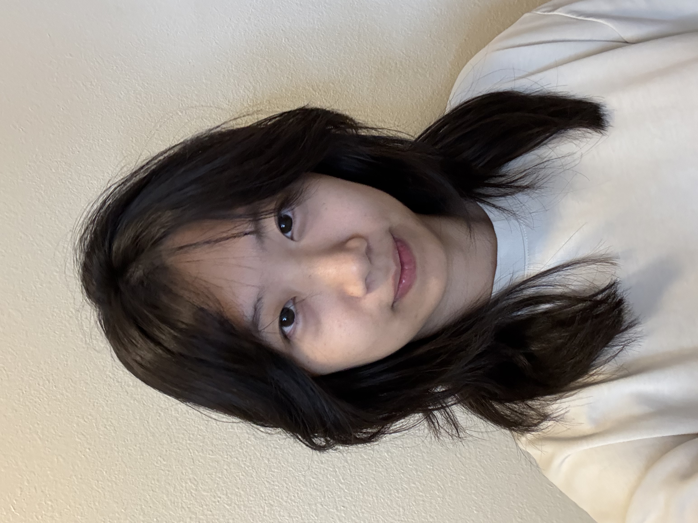

08/2025 -- Present
Research Interests: Security of large language models and federated learning; backdoor detection and repair; forensic attribution; poisoning-robust retrieval-augmented generation.

08/2026 -- Present
Research Interests: Provenance for large language models; tracing generated content back to its training and retrieval sources.
08/2026 -- Present
Research Interests: Large language model fine-tuning; multi-armed bandits; online decision making for adapting language models.
I am also happy to work with motivated M.S. and undergraduate students at UNT on independent study and research projects. Familiarity with optimization, probability, and Python is helpful. Please see the Research page for an overview of ongoing directions.
Back to Top ↑